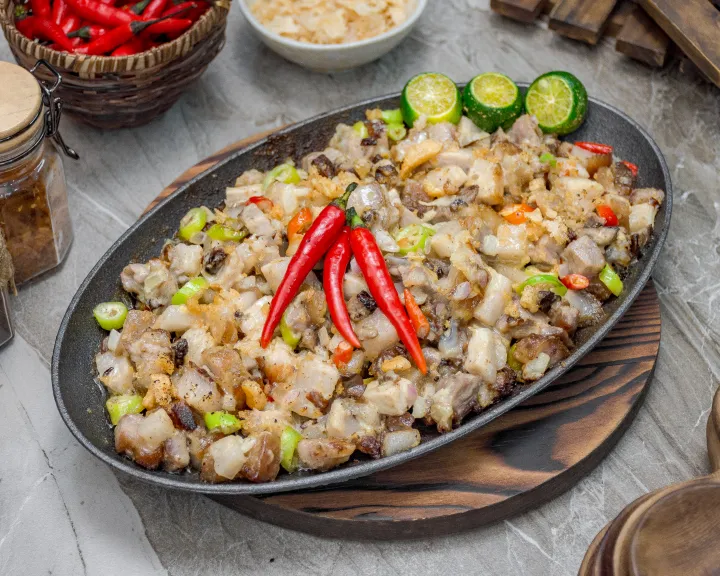
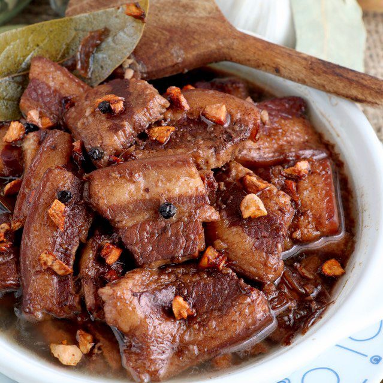

Grandma's Recipe

Ingridients
- 800.0g Pork Face and ear, cleaned and pre-boiled
- Water 2 l
- 20.0g Black Peppercorn
- 2pc bayleaf
- Knorr Liquid Seasoning 3.8L 200 g
- Black Pepper 2 g
- Chicken Liver 200grams
- White Onions, chopped 200 g
- Green Chilies, chopped 15 g
- Chicharon, crushed for garnish 50 g
- Calamansi, for garnish 4 pc
- Red Chili, for garnish 5 g
- In a medium-sized stockpot, combine the pork face, ear, water, black pepper, bayleaf, Knorr Liquid
Seasoning and Knorr
Pork Broth Base.
- Boil and simmer until pork is tender.
Strain and set aside.
- In a mixing bowl, marinate the liempo in Knorr Liquid Seasoning and black pepper for 20 minutes.
- Once ready, preheat the griller.
Grill the pork face, ear, liempo and chicken liver until done.
- Chop the protein to desired sizes.
- n a large mixing bowl, combine the grilled meats, onion, chili, Knorr Liquid Seasoning and Lady's Choice
Real
Mayonnaise. Mix very well.
- Serve on a sizzling plate.
- Garnish with chicharon, calamansi and chili.

Ingridients
- 1 ½ pounds pork belly - cut into 1x1 or 1x2-inch cubes
- ⅓ cup dark soy sauce
- ½ cup vinegar
- 1 cup water
- 10-12 pieces peppercorn
- 3 pieces bay leaves
- 1 teaspoon brown sugar - optional
- 1 big onion - chopped coarsely
- 2 tablespoons oil
- 5 cloves garlic - minced
- Place pork belly in a pot. Add the soy sauce, vinegar, water, peppercorn, bay leaves, brown sugar, and
onions. Bring to
boil over high heat.
- Cover the pot with the lid and lower heat to low. Let it cook for about an hour or until the meat is
really tender and
liquid is reduced to half. Separate meat from the sauce.
- In a skillet, heat oil over medium-low and add the minced garlic. Cook garlic until golden. Remove some
of the garlic
from oil leaving about ½ in the pan and transfer the rest to a small bowl.
- Add back the meat to the skillet and cook for a minute or two. Add the sauce again and let it simmer for
some minutes
until the sauce is reduced some more and becomes thicker.
- Transfer the Pork Adobo to a serving dish and top it with the browned garlic. Serve with hot steaming
rice.
Ingridients
- 1 lb lechon kawali sliced
- 1 piece Knorr Shrimp Cube
- 12 pieces sitaw cut into 2 inch length
- 1/2 piece kalabasa cubed
- 12 pieces okra
- 1 piece Chinese eggplant sliced
- 1 piece ampalaya sliced
- 1 piece kamote cubed (optional)
- 2 pieces tomato cubed
- 2 thumbs ginger crushed (optional)
- 1 piece onion chopped
- 4 cloves garlic crushed
- 2 teaspoons bagoong alamang
- 2 ½ cups water
- 3 tablespoons cooking oil
- ¼ teaspoon ground black pepper
- Heat cooking oil in a pot. Saute onion and garlic. Add ginger and continue to cook until the onion
softens.
- Add lechon kawali. Saute for 1 minute.
- Pour water. Let boil.
- Add Knorr Shrimp Cube. Cover the pot and cook in medium heat for 20 minutes.
- Add tomato and bagoong alamang. Stir. Cover the pot. Cook for 3 minutes.
- Put the kalabasa and kamote into the pot. Cook for 7 minutes.
- Add sitaw, okra, ampalaya, and eggplant. Stir. Cover the pot and cook for 5 minutes.
- Season with ground black pepper and add remaining lechon kawali. Cook for minutes.
- Tranfer to a serving plate. Serve. Share and Enjoy!